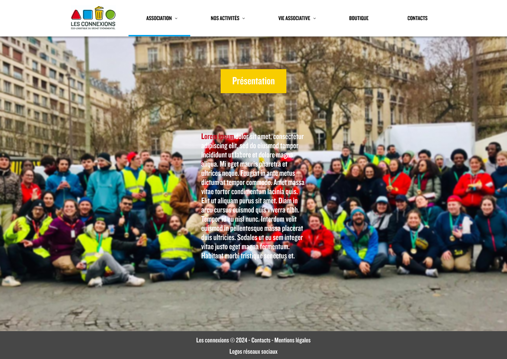
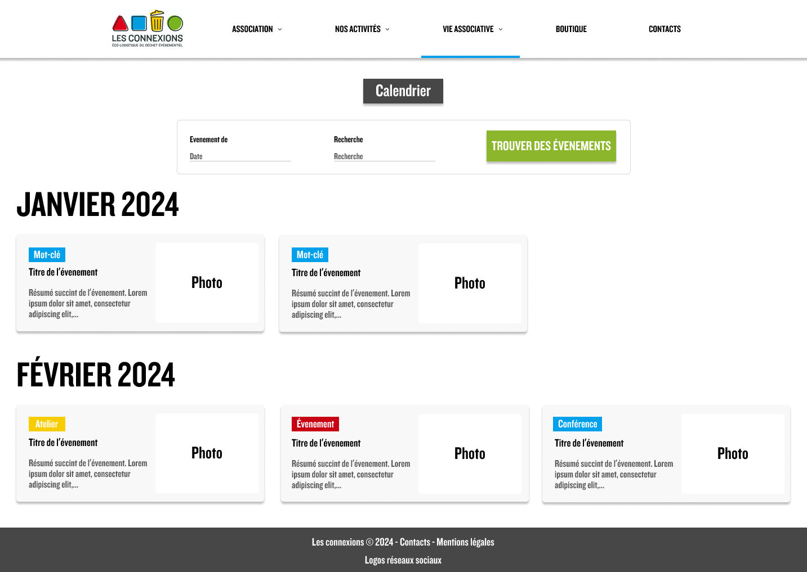
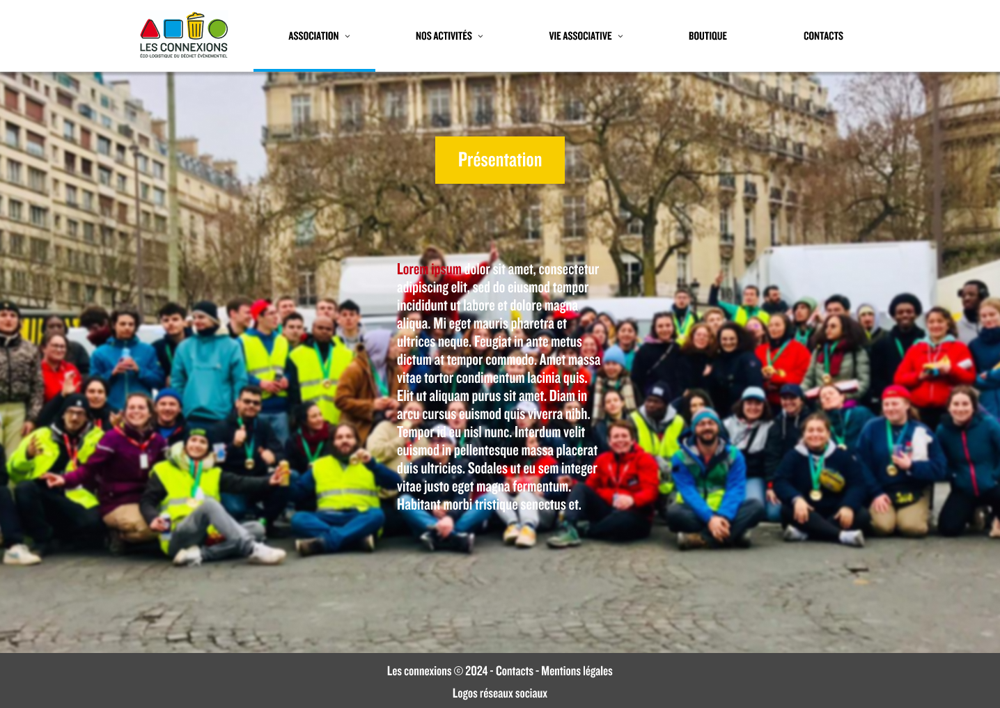
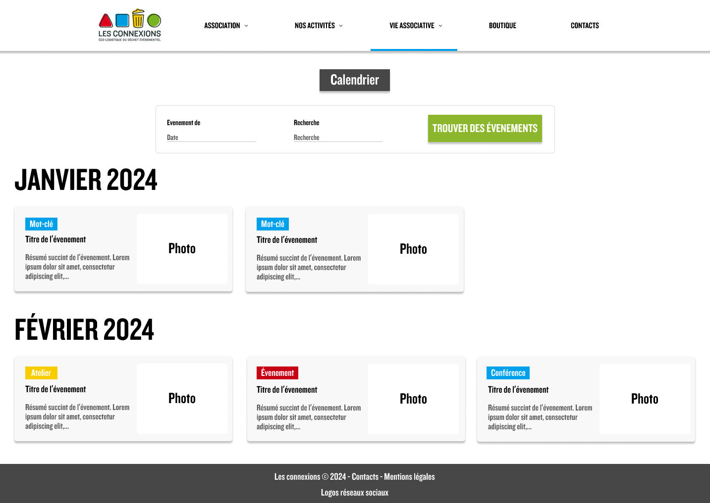

Tommy Epal
Développeur Web Full Stack

Passionné par deux domaines distincts - la nature et l'informatique -
j’ai entamé mon parcours professionnel dans les sciences de la terre
et de l'environnement. Titulaire d'un master 2 avec mention, j'ai
consacré quelques années à étudier les phénomènes géologiques avant de
donner une nouvelle orientation à ma carrière en me plongeant dans le
monde fascinant du développement web.
Suite à une année d'auto-formation intensive, j'ai acquis des
compétences solides dans le développement frontend, tout en
établissant des bases dans le domaine du backend. Aujourd'hui, en tant
que développeur web full stack, je m'épanouis pleinement dans la
création de projets innovants. Mon objectif est de continuer à allier
mes deux passions, en contribuant activement à des projets qui
intègrent les avancées technologiques tout en respectant
l'environnement qui m'inspire tant.
Compétences
- HTML5
- CSS3
- JavaScript
- NodeJs
- Gestion de base de données
- Figma
Mes Projets
Site Statique
Application Météo

Exercices Javascript

Création d'une API Rest

Site e-commerce

Les Connexions - site associatif
Contact
Disponible pour les opportunités en entreprise et en Freelance.
Vous avez un projet passionnant pour lequel vous avez besoin d'aide ?
Envoyez-moi un e-mail ou remplissez le formulaire ci-dessous !
 


